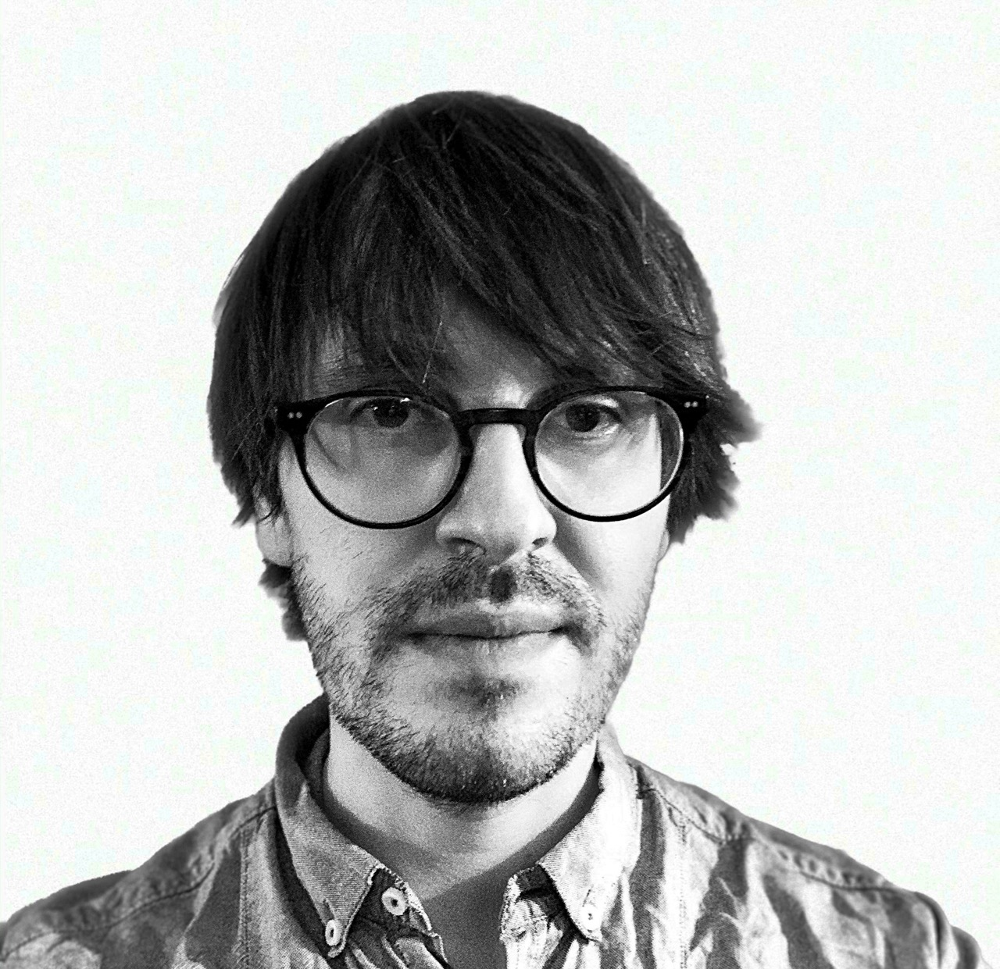

Klaus von Gleissenthall
I am a tenured Assistant Professor in Computer Science at the Vrije Universiteit Amsterdam, where I work with the theory group and VUSec. I'm also affiliated with the Computer Security group at CWI.
I work on methods that help practitioners write correct, secure and reliable systems, where I focus on keeping user effort low. My research interests span programming languages, security and systems.
I work on methods that help practitioners write correct, secure and reliable systems, where I focus on keeping user effort low. My research interests span programming languages, security and systems.
Open Positions:
I'm looking for students at all levels. I have open positions for PhDs and post-docs. If you're interested in the intersection of Security, Programming Languages and Formal Verification, please email me.
Research Team
I'm currently working with this talented group of researchers:
Robin Webbers
PhD Student (2022-)
PhD Student (2022-)
Alp Adnan Basar
PhD Student (2024-)
PhD Student (2024-)
Luís Ferreirinha
PhD Student (2024-)
PhD Student (2024-)
Wind Wong
PhD Student (2025-)
PhD Student (2025-)
Parnian (Anna) Naderi
PhD Student (2026-)
PhD Student (2026-)
Zunchen Huang
Post-doc (2024-)
Post-doc (2024-)
Robert Schenck
Post-doc (2025); now at Northeastern University
Post-doc (2025); now at Northeastern University
Recent News
🏆🏆🏆 I've been awarded the ERC Starting Grant (1.5 Mio € personal grant) for my research on building side-channel free systems. I will be hiring soon, please reach out if you're interested.
Our paper on refinement type refutations has been accepted at OOPSLA'24. Check out this blog post where we describe the ideas.
🏆 Our paper on verifying leakage contracts for hardware received an honorable mention in the Intel hardware security award'24.
🏆 Our paper on verifying leakage contracts for hardware has received a distinguished paper award at CCS'23.
🏆 Our paper "Randomized Testing of Byzantine Fault Tolerant Algorithms" has been awarded a distinguished paper award at OOPSLA'23.
Bio
Before coming to the VU, I was a post-doc in the Programming Systems group at UCSD where I worked with Ranjit Jhala and Deian Stefan. Before that, I was a PhD student at TUM where I was advised by Andrey Rybalchenko and funded through a Microsoft Research scholarship. During my PhD I worked at Microsoft Research Cambridge as an intern and spent some more time there as a visitor. I received both a BSc. and MSc. in computer science from TUM with a minor in logic and philosophy of science at LMU. During my master's, I spent five months at Université Paris Diderot.
Service
Program Committees
| 2026 | OOPSLA, S&P, Euro S&P, ISCA |
| 2025 | S&P |
| 2024 | ASPLOS, PLDI, CSF, CONCUR |
| 2023 | ASPLOS, NETYS |
| 2022 | PLDI, CAV |
| 2021 | CCS, NETYS, RAID, CCSW, PLAS |
Co-Chairing & Organization
| 2023 | Workshop on Programming Languages and Analysis for Security (PLAS) |
| 2021 | VMCAI Artifact Evaluation |
| 2019 | Verification of Distributed Systems Workshop (VDS) |
Publications
| S&P'26 | QuickSafe: Targeted Hardening Against Memory Corruption. Johannes Blaser, Floris Gorter, Klaus v. Gleissenthall, Herbert Bos. |
| CCS'25 | Synthesis of Sound and Precise Leakage Contracts for Open-Source RISC-V Processors. Zilon Wang, Gideon Mohr, Klaus v. Gleissenthall, Jan Reineke, Marco Guarnieri. |
| Usenix Security'25 | Phantom Trails: Practical Pre-Silicon Discovery of Transient Data Leaks. Alvise de Faveri Tron, Raphael Isemann, Hany Ragab, Cristiano Giuffrida, Klaus v. Gleissenthall, Herbert Bos. [PDF] |
| OOPSLA'24 | Refinement Type Refutations. Robin Webbers, Klaus v. Gleissenthall, Ranjit Jhala. [PDF][Blog] |
| IEEE TDSC'24 | InvisiGuard: Data Integrity for Microcontroller-Based Devices via Hardware-Triggered Write Monitoring. Dongliang Fang, Anni Peng, Le Guan, Erik van der Kouwe, Klaus v. Gleissenthall, Wenwen Wang, Yuqing Zhang, Limin Sun. [PDF] |
| CCS'23 | Specification and Verification of Side-channel Security for Open-source Processors via Leakage Contracts. Zilong Wang, Gideon Mohr, Klaus v. Gleissenthall, Jan Reineke, Marco Guarnieri. 🏆 Distinguished Paper Award. 🏆 Finalist, Intel Hardware Security Award [PDF] |
| PLDI'23 | Don't Look UB: Exposing Sanitizer-Eliding Compiler Optimizations. Raphael Isemann, Cristiano Giuffrida, Herbert Bos, Erik van der Kouwe, Klaus v. Gleissenthall. [PDF] |
| ACSAC'23 | Triereme: Speeding up hybrid fuzzing through efficient query scheduling. Elia Geretto, Julius Hohnerlein, Cristiano Giuffrida, Herbert Bos, Erik Van Der Kouwe, Klaus v. Gleissenthall. [PDF] |
| OOPSLA'23 | Randomized Testing of Byzantine Fault Tolerant Algorithms. L. Winter, F. Buse, D. de Graaf, Klaus v. Gleissenthall, B. Kulahcioglu Ozkan. 🏆 Distinguished Paper Award. [PDF] |
| LATTE'22 | Refinement Types for Hardware. Robin Webbers, Klaus v. Gleissenthall. |
| CCS'21 | Solver-Aided Constant-Time Hardware Verification. Klaus v. Gleissenthall, Rami Gökhan Kici, Deian Stefan and Ranjit Jhala. [PDF] |
| POPL'21 | Automatically Eliminating Speculative Leaks with Blade. Marco Vassena, Craig Disselkoen, Klaus v. Gleissenthall, Sunjay Cauligi, Rami Gökhan Kici, Dean Tullsen, Ranjit Jhala, Deian Stefan. 🏆 Distinguished Paper Award. [PDF][Code] [LLVM Blade] |
| PLDI'20 | Towards Constant-Time Foundations for the New Spectre Era. Sunjay Cauligi, Craig Disselkoen, Klaus v. Gleissenthall, Dean Tullsen, Deian Stefan, Tamara Rezk, Gilles Barthe. 🏆 Honorable mention, Intel hardware security award. [PDF][Talk][Code] |
| USENIX Security'19 | IODINE: Verifying Constant-Time Execution of Hardware. Klaus v. Gleissenthall, Rami Gökhan Kici, Deian Stefan and Ranjit Jhala. [PDF][Slides][Code][Talk] |
| POPL'19 | Pretend Synchrony: Synchronous Verification of Asynchronous Distributed Programs. Klaus v. Gleissenthall, Rami Gökhan Kici, Alexander Bakst, Deian Stefan and Ranjit Jhala. [PDF][Slides][Code] |
| OOPSLA'17 | Verifying Distributed Programs via Canonical Sequentialization. Alexander Bakst, Klaus v. Gleissenthall, Rami Gökhan Kici and Ranjit Jhala. [PDF][Slides][Code][Benchmarks][ThequeFS][Talk] |
| PLDI'16 | Cardinalities and Universal Quantifiers for Verifying Parameterized Systems. Klaus v. Gleissenthall, Nikolaj Bjørner and Andrey Rybalchenko. [PDF][Slides][Talk] |
| CAV'15 | Symbolic Polytopes for Quantitative Interpolation and Verification. Klaus v. Gleissenthall, Boris Köpf and Andrey Rybalchenko. [PDF][Slides][Extended Version] |
| CONCUR'13 | An Epistemic Perspective on Consistency of Concurrent Computations. Klaus v. Gleissenthall and Andrey Rybalchenko. [PDF][Slides] |
| KI'11 | Bayesian Logic Networks and the Search for Samples with Backward Simulation and Abstract Constraint Learning. Dominik Jain, Klaus v. Gleissenthall and Michael Beetz. |
See also my DBLP entry for a complete list of publications.